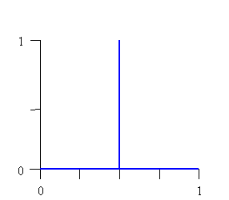

New Features, Changes and Helpful Hints
This section describes new features that have been added as well as changes or fixes that have been made to FuzzyJ. It also provides some helpful hints about how to use the Toolkit (beyond what is covered in the basic parts of the User Guide).
Modifications
FuzzyJess requires Jess 7.x or later
New ways to calculate the similarity of two FuzzyValues
Fixed problem with findTerm and removeTerm methods of FuzzyVariable
Added Checks for Valid Term Names
New Rule Executor TsukamotoRuleExecutor
Added method getXForMembership in FuzzySet and FuzzyValue (and new exception)
New FuzzySet types GaussianFuzzySet, LeftGaussianFuzzySet and RightGaussianFuzzySet added
Changes to Combining Fuzzy Match Scores When Multiple Fuzzy Antecedents
New Defuzzification Methods for FuzzyValueVector Class
Combining Fuzzy Match Scores When Multiple Fuzzy Antecedents
FuzzySets Can Have Membership Values Larger Than 1
fuzzySum Operation for FuzzyValues/FuzzySets
FuzzySet Method simplifySet Fixed
LeftLinearFuzzySet and RightLinearFuzzySet
Programming Helpers
Implementing Takagi-Sugeno-Kang type rules
Implementing
Kosko’s SAM (Standard Additive Method)
Implementing Tsukamoto type rules
Fixed a problem with Similarity calculations: When changes to the definition/implementation of equals and equalsStar for FuzzyValues were introduced in version 1.10 of the FuzzyJ Toolkit, it was noted that ALL existing code using these methods on FuzzyValues should be changed. A couple of missed code changes led to Similarity always returning a 1.0 value. Version 1.10 should be replaced by version 1.10a.
Fixed apparent problem with firePropertyChange for FuzzyValues (*** new definitions for equals and equalsStar methods): A change in a recent version of Jess has led to a bug in FuzzyJess where a Java bean with a FuzzyValue property appears not to be propagated to Jess when a firePropertyChange is executed. The problem is that Jess will only assert the new fact that is changed if the FuzzyValue is different than the previous FuzzyValue that was in the slot. The equals method is used to check for a difference and the FuzzyValues equals used a weak test for equality (the 2 FuzzyValues only needed to have the same FuzzyVariable associated with them). This was required so that other parts of FuzzyJess would work as expected, in particular so that Global Contribution would happen automatically. But the correct operation of FuzzyJess required that Jess did not do this check when a property was being updated and FuzzyJess users were required to use a call to firePropertyChange like:
pcs.firePropertyChange("myFuzzyValueProperty",
null, theNewFuzzyValue);
where the ‘old’ argument was set to null. This forced the change to be propagated. Some recent changes to Jess led to a problem since the new fact would not be asserted if there was no change in the property and with the weak definition of equals for FuzzyValues, even if the FuzzySet changed they would appear to be the same to Jess code. The solution was to change the equals method for FuzzyValue to require the same FuzzyVariable and identical FuzzySets for equality. This was the test done in the equalsStar method previously. So now the equalsStar method performs the weak test for equality.
This was still not enough to provide correct operation of FuzzyJess since the code that does automatic Global Contribution calculations to combine the FuzzyValues asserted from multiple rules relied on the weak equals operator. This led to some ‘internal’ changes to allow the equals method to change how it compares FuzzyValues, strong compare by default or a weak compare when required. If the FuzzyJess API were in the nrc.fuzzy package rather than the nrc.fuzzy.jess package this ‘internal’ change would have been completely hidden from the public interface. Instead a method to change the behaviour was added but it can only be used if one has knowledge of a private code (or password). So effectively no public user of the API can or should change it’s behaviour from the default strong equality check.
Note that from version 1.10 and on:
- equals does a strong comparison of FuzzyValues (same FuzzyVariable and identical FuzzySets)
- equalsStar does a weak comparison of FuzzyValues (same FuzzyVaribles only)
- no need to use firePropertyChange differently than for any other property
e.g. pcs.firePropertyChange("myFuzzyValueProperty",
theOldFuzzyValue, theNewFuzzyValue);
- ALL existing programs should modify their use of the ‘equals’ and ‘equalsStar’ FuzzyValue methods to correspond to the revised definitions and in particular look at the use of firePropertyChange for FuzzyValue properties.
FuzzyJess requires Jess 7.x or later now – In version 1.9 of FuzzyJess we have updated the code to get rid of deprecated items. This means that users of FuzzyJess will need to use Jess version 7.x or later.
Added a choice for calculating the similarity of FuzzyValues (SimilarityByPossibilityOperator, SimilarityByAreaOperator) – There are many ways that have been suggested for calculating the similarity of two FuzzyValues. In previous versions of FuzzyJ only a single method was implemented. It used the concepts of possibility and necessity. The calculation was done as:
similarity = if necessity(f1,f2) > 0.5
then possibility(f1,f2)
else (necessity(f1,f2) + 0.5) * possibility(f1,f2)
and
necessity(f1,f2) = 1 - possibility(not f1,f2)
and
possibility(f1,f2) = maxx(min(uf1(x),uf2(x))
In many cases this provides a reasonable value as a measure of the similarity of the FuzzyValues. However, in some cases the value appears to be non-intuitive and perhaps less useful. Consider the following code:
FuzzyVariablefVarX
= new FuzzyVariable("TestFVar", 0, 1);
FuzzyValue
fval1 = new FuzzyValue(fVarX, new RightLinearFuzzySet(0.25, 0.26));
FuzzyValue
fval2 = new FuzzyValue(fVarX, new LeftLinearFuzzySet(0.24, 0.25));
System.out.println("\nSimilarity
using possibility/necessity between fuzzy values (expect to be near 0.0):
" + fval1.similarity(fval2));
The resulting similarity value of this is 0.5. However, these FuzzyValues overlap only slightly so one would not expect such a large measure of similarity. We added the ability for the similarity method to easily use different ways to calculate the similarity measure. In particular for this version of FuzzyJ we’ve added a second operation that measures similarity as the ratio of area of the intersection of the fuzzy values to the area of the union of the fuzzy values. This is a quite commonly used measure and perhaps more intuitive. To allow this flexibility we added an abstract SimilarityOperator class that implements a SimilarityOperatorInterface. This abstract class is extended (sub-classed) by 2 classes, SimilarityByPossibilityOperator (implements the original similarity measure) and SimilarityByAreaOperator (implements the ratio of areas measure). The similarity method uses the operator associated with the FuzzyValue’s defaultSimilarityOperator static variable. This can be changed using the setDefaultSimilarityOperator method of the FuzzyValue and is initially associated with the SimilarityByPossibilityOperator. So in the above example we could do the following to have the similarity method use the alternate SimilarityByAreaOperator:
FuzzyVariablefVarX
= new FuzzyVariable("TestFVar", 0, 1);
FuzzyValue
fval1 = new FuzzyValue(fVarX, new RightLinearFuzzySet(0.25, 0.26));
FuzzyValue
fval2 = new FuzzyValue(fVarX, new LeftLinearFuzzySet(0.24, 0.25));
FuzzyValue.setDefaultSimilarityOperator(new
SimilarityByAreaOperator());
System.out.println("\nSimilarity
using ratio of areas between fuzzy values (expect to be near 0.0): " +
fval1.similarity(fval2));
In this case the result is 0.01, perhaps a much more intuitive similarity measure for this pair of FuzzyValues. There is also a second version of the similarity method with a second argument that specifies the similarity operator to be used only for that execution of the similarity method. So, for example one could have replaced the code above by:
FuzzyVariablefVarX
= new FuzzyVariable("TestFVar", 0, 1);
FuzzyValue
fval1 = new FuzzyValue(fVarX, new RightLinearFuzzySet(0.25, 0.26));
FuzzyValue
fval2 = new FuzzyValue(fVarX, new LeftLinearFuzzySet(0.24, 0.25));
System.out.println("\nSimilarity
using ratio of areas between fuzzy values (expect to be near 0.0): "
+ fval1.similarity(fval2, new SimilarityByAreaOperator()));
For FuzzyJess users we also added two functions to allow the default similarity operator to be changed. These are set-default-similarity-operator and get-default-similarity-operator. For example in Jess code one would write:
(set-default-similarity-operator
area) or
(set-default-similarity-operator possibility)
Fixed a problem with the FuzzyVariable methods findTerm and removeTerm – Term names are not case sensitive in FuzzyJ and the methods findTerm and removeTerm would fail when any term name was supplied with non-lowercase characters.
Added checks for valid term names in FuzzyVariables – Added some code to check for valid names for terms when creating FuzzyVariables or adding terms to FuzzyVariables. Name must not contain spaces (e.g. “quite hot”) and must not contain left or right parenthesis (e.g. “(“ or “)” ). They also cannot be the reserved words ‘and’ or ‘or’. They could be the same as predefined modifiers such as ‘very’ or ‘extremely’ but users should be aware that those modifiers would no longer be useable and they might get unexpected errors in linguistic expressions that were trying to use those modifiers.
centerOfAreaDefuzzify – Added a new method to defuzzify FuzzySets and FuzzyValues (and FuzzyValueVectors). This type of defuzzification returns the x value that has one half of the area of the fuzzy set on each side of it. In the case of a FuzzyValueVector, a fuzzySum is done on each of the fuzzy sets in the FuzzyValueVector and the centerOfAreaDefuzzify is done on this result. See the method definitions for details.
New Rule Executor
TsukamotoRuleExecutor - Added a special RuleExecutor (like
MamdaniMinMaxMinRule Executor and LarsenProductMaxMinRuleExecutor) to implement
the Tsukamoto type rules. In this case the conclusion fuzzy values are always
expected to have strictly increasing or strictly decreasing functions fuzzy
sets that cover all membership values from 0.0 to 1.0. When the rule fires the outputs are
fuzzy sets that have a single value (singletons) with the membership value
equal to the degree of match of the antecedents (or the DOF, Degree of
Fulfillment of the rule). For Details see Implementing
Tsukamoto Rules.
Method getXForMembership for FuzzyValues &FuzzySets – Added a method that when given a membership value returns the first X value that has that membership value. This is most useful with FuzzySets that are strictly increasing or strictly decreasing and cover all membership values (like SFuzzySet, ZFuzzySet, LeftLinearFuzzySet, RightLinearFuzzySet, etc.). Consider the following examples:

Fixed Fuzzy Set Plotting errors – Some minor problems with the plots of fuzzy sets were fixed. The plotted points were sometimes missing (at the right end of the plot) or too far to the left.
New FuzzySet types GaussianFuzzySet, LeftGaussianFuzzySet and RightGaussianFuzzySet – Added new fuzzy sets that have a Gaussian distribution shape. For details see the FuzzyJ API. These are similar to the PI, S, and Z fuzzy sets but may be more useful in some situations.
Version 1.5a Modifications
Change to Classes for Combining Fuzzy Match Scores When Multiple Fuzzy Antecedents – In version 1.5 the classes added to do the combining of match score when there were multiple fuzzy values in the antecedents were not implemented as well as they should have been. The implementation required that each AntecedentCombineOperator provide an execute method that took two doubles and returned the result of the operator on these two arguments. However, performing the operator pair wise on the match values severely restricts the type of operators that one can use. It has been changed so that the execute method receives the entire list of match scores as an array instead of pairs of values. This allows for more flexibility in the type of operators that can be implemented. To demonstrate the point, a new class, CompensatoryAddAntecedentCombineOperator, has been included in version 1.5a. This implements an operator that can give a value that will be greater than the minimum of the values and will always be greater than or equal to the product of the values. In some cases this may be a better choice. For example, if two of three match scores are 1.0 and the third is 0.1. Then in some situations it might be more acceptable to use a value somewhere between 0.1 and 1 as the combining value. The compensatory add operation is described in Fuzzy Set Theory and Its Application by Zimmermann (Kluwer Academic Publishers, 1990). The equation for the compensatory add is shown below.

where xi are the m match values and g is a parameter that controls the compensation factor for the calculation. If g is 0 then this reduces to the product of the match values. The default value of g is 0.562, which is supposed to give reasonable and expected (intuitive?) results. Again this depends on the application and what is suitable. With the previous (rather poor) implementation this type of operator could not have been implemented. Note that when a CompensatoryAddAntecedentCombineOperator object is created one can specify the g value (or one can use a setGamma method on the object).
New Defuzzification Methods for FuzzyValueVector Class – Previously one could not do Defuzzification on a FuzzyValueVector object. Now all of the defuzzification strategies can be applied to a FuzzyValueVector. The details for these methods can be found in the FuzzyJ API but we’ll describe them here briefly. In all cases the FuzzyValues in the FuzzyValueVector must have the same FuzzyVariable. The motivation for this was to allow more flexibility in performing Global Contribution for the outputs of FuzzyRules. Rather than doing a union (or sum or other operation) as the rules fire, one can store the individual results in FuzzyValueVectors and decide how to combine them after all of the rules have fired. The weightedAverageDefuzzify method uses all of the x-values in all of the FuzzyValues in the vector to perform its calculation. This is a different than one would obtain by doing a fuzzy union of the outputs and then a weightedAverageDefuzzify on the single FuzzyValue. In particular if the outputs were all singletons and some of the singleton outputs were at the same x value (with perhaps different membership values) then the extra weighting of the singletons at the same value would be lost since the union operation would just record one membership value at that x position (the maximum). In the FuzzyValueVector, the defuzzification would use both membership values at the same x position giving more weight to this x position in the calculation. The question remains, is this a good thing to do? Well it depends on your needs and this provides the flexibility to achieve the desired outcome. For the maximumDefuzzify method we calculate the mean of the x values with maximum membership values over the entire set of FuzzyValues. Similar comments can be made as for the weightedAverageDefuzzify. In the case of momentDefuzzify, the moments and areas for each are of each FuzzyValue is used to calculate the defuzzified value. This means that the overlapping areas if the individual FuzzyValues contribute more than they would have if the FuzzyValues were combined first using a union operation. Again, in some instance this is the desired method of defuzzification. One can get an identical result to the momentDefuzzify on a FuzzyValueVector by doing Global Contribution of the output values with a fuzzy sum operation (rather than the default union). Then a momentDefuzzify on the resultant ‘summed’ FuzzyValue would give the same result. This is common in methods like Kosko’s SAM method (Standard Additive Method). The bottom line here is the increase in flexibility in how one collects the results of multiple rules that fire and how the results can be defuzzified.
Note that in version 1.8 the centerOfAreaDefuzzification method has been added for Fuzzy sets and fuzzy values. It has also been included with the FuzzyValueVector and is implemented by doing a fuzzySum on all of the fuzzy sets and then a centerOfArea on this result.
New Classes to Control the Operation Used to Combine Fuzzy Match Scores When Multiple Fuzzy Antecedents – Several Classes have been added to provide a general way to combine the match scores of multiple fuzzy antecedents and their corresponding fuzzy inputs. Prior to this release there was only one choice – the minimum of the match scores was used. Some techniques, such as Kosko’s SAM method (Standard Additive Method) require that the combining of these fuzzy match scores be done by multiplying the individual scores. So an interface, AntecedentCombineOperatorInterface, an abstract class, AntecedentCombineOperator, that implements the interface and two extensions of the abstract class, MinimumAntecedentCombineOperatorInterface and ProductAntecedentCombineOperator were created to provide two ways to perform this combining of the scores. By extending the abstract class other operators could also be defined if needed. At the same time the FuzzyRule class was modified to allow it to maintain a default antecedent combine operator (that is used when a rule is created without specifying a particular operator) and a particular operator for each rule. This is described in the chapter on FuzzyRules and in the chapter on FuzzyJess.
FuzzySets Can Have Membership Values Larger Than 1 – It has always been true, although not necessarily documented, that FuzzySets could have membership values greater than 1. However, the documentation has been updated to reflect this and the methods that deal with this have been made consistent or have modified to do an ‘appropriate’ thing when they encounter FuzzySets with membership values greater than 1. Normally, FuzzySets will not have values exceeding 1 but in certain cases it can happen and it needs to be allowed. Users can create FuzzySets to specifically hold such values (using insertSetPoint or appendSetPoint). They are responsible for the use and care of such FuzzySets and must know what will happen as the operate on them. The new fuzzy operation fuzzySum allows one to add FuzzySets (this is described below) and in this case FuzzySets with membership values greater than 1 may be created. This is especially useful for dong global contribution of fuzzy outputs of rules (needed for Kosko’s SAM method). It must be stressed that the user must be careful when creating FuzzySets with membership values greater than 1.
fuzzySum Operation for FuzzyValues/FuzzySets – Two FuzzyValues can now be added together using a fuzzySum method. The result is a FuzzyValue with a FuzzySet whose membership value at any x position is the sum of the membership values at the corresponding x position of the individual FuzzySets. See the description in the FuzzyJ API for FuzzyValues.

New FuzzyJess Functions – Six new functions were added. They can all be done using calls to Java functions but these functions might make it simpler to perform the actions. The functions are:
(set-fuzzy-global-contribution-operator
operator)
(get-fuzzy-global-contribution-operator)
(set-default-fuzzy-rule-executor
executor)
(get-default-fuzzy-rule-executor)
(set-default-antecedent-combine-operator
operator)
(get-default-antecedent-combine-operator)
For details see the chapter on FuzzyJess.
FuzzySet Method simplifySet Fixed – This would not be noticed by most users but there was a minor problem with the way FuzzySets were being simplified to remove unnecessary points.
FuzzyVariable – This class was extended by adding 4 new methods to access and remove fuzzy terms. The new methods are:
findTerms() – returns an enumeration with the set of FuzzyValues that represent the terms of the FuzzyVariable
findTermNames() – returns an enumeration with the set of String names of the terms of the FuzzyVariable
removeTerm( String term ) – removes a specified term from the set of terms of the FuzzyVariable
removeTerms() – removes a all terms from the set of terms of the FuzzyVariable
TriangleFuzzySet – A constructor with 2 arguments has been in the code since the beginning but for some reason was not public so it was redefined to be public. The constructor arguments are the center x value of the triangle and the full width of the base of the triangle. So a triangle fuzzy set constructed with the parameters 3.0 and 2.0 would create a fuzzy set identical to one created by specifying the 3 points (2.0, 0.0), (3.0, 1.0) and (4.0, 0.0).
Version 1.3 Modifications
SingletonFuzzySet – This class is used to build specialized
FuzzySets that have a single value with membership value of 1.0. Note that such
a FuzzySet requires 3 points in it's definition:
e.g.
(x,0) (x,1) (x,0)
The diagram below shows a
SingletonFuzzySet.

The Constructors have been defined to make the generation of such curves as simple as possible. Only 1 point is required to define the singleton shape. This is a specialization of the TriangleFuzzySet where the left, middle and right x values are the same. A common use for such FuzzySets is in the creation of Takagi-Sugeno-Kang type rules where the consequents of the rules are singleton values (or expressions that result in a single value). See the section on Takagi-Sugeno-Kang rules below.
LeftLinearFuzzySet and RightLinearFuzzySet – These fuzzy sets have been added to make is easier to create fuzzy sets similar to the SFuzzySet and ZFuzzySet with straight lines rather than curved lines between the 0 and 1 values in the set. They are shown below.
RightLinearFuzzySet 
LeftLinearFuzzySet 
WeightedAverageDefuzzify –
This is a new method defined for FuzzyValues that calculates the weighted
average of the values of a fuzzy set as the defuzzification value. This is
slightly different than the maximumDefuzzify since maximumDefuzzify uses only
points that have the same
membership value (the one that is the maximum in the set of points). The
weightedAverageDefuzzify uses all of the points with non-zero membership values
and calculates the weighted average of these x values using the membership
values as weights in this average.
This doesn't always work well
because there can be x ranges where the y value is constant at the max value
and other places where the max is only reached for a single x value. When this
happens the single value gets too much of a say in determining the defuzzified
value. So use moment defuzzify in cases like this.
/------\
/\
/ \
/ \
--/
\---------------/
\-------------
^
^
|
|
|
| gives this as the weighted average
| this is more reasonable?
However, it is especially
effective if the output has a number of singleton points in it. This might be,
for example, when one has only singleton values describing the output fuzzy
values (Takagi-Sugeno-Kang zero order
type rules). In this case one gets a result that is expected and one that
results in an exception with the momentDefuzzify (since the area is 0) and a
poor result with the maximumDefuzzify (since only the values with the max
membership are used; maximumDefuzzify would yield a result of 20 in the example
below).
1.0
|
|
0.5
| |
| | |
--------|--------|--------|--------
0
10 20 30 40
^
|
| gives 18.57 as the weighted average
(10*0.5 + 20*1
+ 30*0.25) / (0.5 + 1 + 0.25) = 18.57
Fixed problem with parsing linguistic expressions in multi-threaded systems – The classes responsible for parsing linguistic expressions (“very hot or cold”) were using static variables to store information. This was inappropriate when in a multi-threaded system. The static variables were replaced with non-static variables.
Fixed/recognized a problem related to Jess shadow facts that have fuzzy values in a slot – In Jess when a fact is asserted that is ‘identical’ to an existing fact is asserted nothing happens since duplicate facts are not allowed. In FuzzyJess where slots can have FuzzyValues facts are considered to be ‘identical’ when all of the non-fuzzy (crisp) slots are the same (equal) and when the fuzzy values have the same FuzzyVariable. For example, if a fact is created by the assert
(assert (fan (ID fan1) (speed (new FuzzyValue ?*speedFuzzyVar* “slow”))))
and later another assert
(assert (fan (ID fan1) (speed (new FuzzyValue ?*speedFuzzyVar* “medium”))))
is executed, then the 2 facts are considered to be ‘identical’. If these were ‘identical’ non-fuzzy facts, then the second assert would have no effect since the fact already exists. For fuzzy facts these 2 facts are combined (global contribution) such that the crisp values are the same and the fuzzy values are merged using a union operation. So in effect the old (initial) fact is deleted and the new combined fact is asserted (similar to a fact modify). This however, presents 2 problems when using shadow facts, facts created from Java Bean classes in Jess. The first issue is that for a Java Bean to cause an update to a shadow fact it uses the firePropertyChange method:
m_pcs.firePropertyChange("beanAttribute",
oldAttributeValue,
newAttributeValue);
In this case if the old and new
values are ‘equal’ then the slot in the shadow fact is not updated. In the case
of FuzzyValue attributes (slots) the values are ‘equal’ when the FuzzyValues
share the same FuzzyVariable, even if the fuzzy sets for the FuzzyValues are
different. This means that the slot will not be updated and the slot values of
the fuzzy slot will not be combined as required. The solution here is to use:
m_pcs.firePropertyChange("beanAttribute",
null,
newAttributeValue);
and do a test of the values using equalsStar for the FuzzyValues before
calling the firePropertyChange method if desired. This will ensure that the
slot is updated. Well, actually it won’t in version 6.1a2 (or earlier) of Jess
since Jess internally also checks for the equality of the slots and will not
replace the slot with the new one if they are ‘equal’. This required a change
to the Jess code so that it does not block the update of the slot. So the
requirement is to use Jess 6.1a3 or later.
Programming Helpers
Fuzzifying crisp values – One of the steps that is normally required when implementing a fuzzy system is to fuzzify a crisp value so that it can be compared to a fuzzy value in the antecedents (RHS) of a fuzzy rule. This is commonly done using a TriangleFuzzySet or a SingletonFuzzySet. The TriangleFuzzySet allows on to encode the inaccuracy of a crisp value. For example if reading a temperature the temperature sensor is usually accurate within some precision, say 0.05 Degrees. So we might encode the crisp value using:
new
TriangleFuzzySet(x-.05, x, x+0.05)
However, FuzzyValues have a Universe of Discourse (UOD), that is the range of allowed values. If in the above example the x value is closer than 0.05 to either end of this UOD range then we will get an exception (out of range). This would mean it is necessary to do a lot of checking to make sure that this does not happen or catch the exception and treat it differently. A feature of FuzzyJ that may not be widely known allows us to deal with this in a fairly simple way. For a FuzzyValue one can use the static method setConfineFuzzySetsToUOD.
FuzzyValue.setConfineFuzzySetsToUOD(true);
Once set to true this confines all FuzzySets to the x boundaries specified by the Universe of Discourse. This is achieved by truncating the FuzzySet at the UOD boundaries. Consider the example below:

The FuzzySet on the left is a depiction of the set before being confined to
the UOD (Universe of Discourse), and the FuzzySet to the right is the same set
after being confined. Essentially, the set to the right is the same FuzzySet;
however, all points outside the UOD now have a membership value of zero. Note
that this is in fact equivalent to doing an intersection between the given
FuzzySet and the RectangleFuzzySet(lowXBound,
highXBound), but this is considerably more efficient.
One should be careful about setting this to true for all time since you may miss important exceptions. When fuzzifying crisp values it might be best to do something like:
FuzzyValue.setConfineFuzzySetsToUOD(true);
FuzzyValue fv = new FuzzyValue(myFuzzyVar, TriangleFuzzySet(x-.05, x, x+0.05));
FuzzyValue.setConfineFuzzySetsToUOD(false);
Implementing Takagi-Sugeno-Kang (TSK) type rules with FuzzyJ and FuzzyJess – A TSK type rule is different from the rules we have considered in the rest of this user guide. In general the fuzzy rules have had a set of fuzzy inputs and a set of fuzzy outputs. However, TSK rules have fuzzy inputs but they have specialized crisp outputs that are generally either constants (zero order TSK rules) or crisp outputs that are defined by a function that computes a crisp value (usually a function of the crisp values of the input variable). For example we might have:
If pressure is low and temperature is medium then valve opening is 0.7
This is a zero order TSK. We might also a rule something like:
If pressure is low and temperature is medium then valve opening is 5*p + 3*t
where p is the current input pressure and t is the current input temperature (crisp values). Typically we’ll have a set of rules.
If X is X1 and Y is Y1
then z = f1(x,y)
If X is X2 and Y is Y2 then z = f2(x,y)
...
If X is Xn and Y is Yn then z = fn(x,y)
Where x and y are the current crisp values of X and Y. Each of the outputs is calculated and the result is a weighted average of the outputs, with the weights (wi) being the degree of matching of the LHS of the rules. So the final crisp value of this set of rules is:
(w1*f1(x,y)
+ w2*f2(x,y) + … + wn*fn(x,y)) / (w1
+ w2 + … + wn)
This is easily
implemented in FuzzyJ and FuzzyJess using singleton fuzzy values and the
weighted average defuzzify method. In FuzzyJess we might have rules that look
like:
(defrule
tempCold-pressureHot
(temperature
?t&:(fuzzy-match ?t “cold”))
(pressure
?p&:(fuzzy-match ?p “hot”))
=>
(assert
(valve-opening (new FuzzyValue ?*valveFV*
(new SingletonFuzzyValue (+ (* 3 ?*t*)
(* 5 ?*p*))))
)
)
where ?*valveFV* is the
FuzzyVariable for the valve setting and ?*t* and ?*p* hold the current values
of the temperature and pressure in crisp form. The output of this rule is a
singleton fuzzy value with a fuzzy set that has a non-zero value only at the x
position
(+ (* 3 ?*t*) (* 5 ?*p*))))
and a membership value that is the degree of matching for
the fuzzy inputs of the rule. Each of the rules will provide a singleton output
and the final output value will be an aggregate these singleton values into a
FuzzyValue with multiple singleton values each of a (potentially) different
height. By using the weightedAverageDefuzzify
method on the aggregated fuzzy output we will get the required TSK rule result.
In Java the same thing can be accomplished by setting the
consequents of the rules just prior to firing the rules. Consider the simple
example (simpleRule.java) provided with the FuzzyJ Toolkit distribution. The 4th
step is to fire the rule.
// Step 4 (execute
the rule with these inputs)
// remove any inputs associated with the rule, then add
the new inputs to the rule
hotLow.removeAllInputs();
hotLow.addInput(inputTemp);
hotLow.addInput(inputFlow);
// fire the
rule to get a vector of FuzzyValues that represents the outputs
FuzzyValueVector
fvv = hotLow.execute();
We can change this so that we define the consequent
(conclusion) just before we fire the rule.
// Step 4 (execute
the rule with these inputs)
// remove any
inputs associated with the rule, then add the new inputs to the rule
hotLow.removeAllInputs();
hotLow.addInput(inputTemp);
hotLow.addInput(inputFlow);
// dynamically define
the conclusion for the rule based on the crisp inputs
double
crispHotValveChange = 0.0; // this
could be any function, not just a constant
double
crispColdValveChange = 0.5; // this could be any function, not just a constant
hotLow.removeAllConclusions();
hotLow.addConclusion(new FuzzyValue(hotValveChange,
new SingletonFuzzySet(crispHotValveChange));
hotLow.addConclusion(new FuzzyValue(coldValveChange,
new SingletonFuzzySet(crispColdValveChange));
// fire the
rule to get a vector of FuzzyValues that represents the outputs
FuzzyValueVector
fvv = hotLow.execute();
Implementing
Kosko’s SAM (Standard Additive Method) – In his book, Fuzzy Engineering (see
references), Bart Kosko describes a method for fuzzy rule systems that he refers
to as the Standard Additive Method (SAM). This method can be implemented in
FuzzyJ/FuzzyJess by using the MamdaniMinMaxMinRuleExecutor, the
ProductAntecedentCombineOperator, doing Global Contribution of fuzzy outputs
with the fuzzySum operation and defuzzifying the resultant FuzzyValue with the
momentDefuzzify method.
Implementing Tsukamoto Type Rules –
Tsukamoto rules use consequents that are strictly increasing or strictly
decreasing functions. When a rule fires and the outputs are generated a crisp x
value and a membership value are recorded. The membership value is the DOF
(Degree of Fulfillment or degree of matching) of the rule. The x value is
chosen by looking at the consequent fuzzy set to see which x value has that
membership value. The final output of
all of the rules is the weighted average of all the x values, using the
membership values as the weights. In FuzzyJ we have a special RuleExecutor,
TsukamotoRuleExecutor, that generates outputs that are singleton fuzzy values
at the selected x value with a membership value equal to the DOF of the rule.
These output fuzzy values should be combined using the fuzzySum method (rather
than the default fuzzyUnion) and then defuzzified using the
weightedAverageDefuzzify method. This produces the Tsukamoto inference results.
In summary to implement Tsukamoto type rules:
1. Make sure the rules fuzzy outputs are defined using strictly
increasing or strictly decreasing functions that cover all of the membership
values from 0.0 to 1.0 (some example fuzzy sets that have this property are
SFuzzySet, ZFuzzySet, LeftLinearFuzzySet, and RightLineraFuzzySet.
2. Use the fuzzySum method as the rule output combine (global
contribution) operator.
3. Use the weightedAverageDefuzzify method to defuzzify the combined
output of the rules.
This is shown below for a simple 2-rule situation.